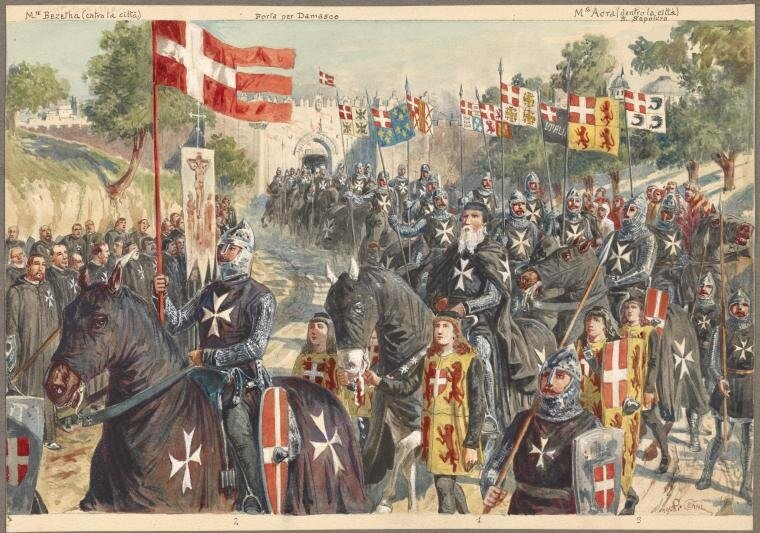
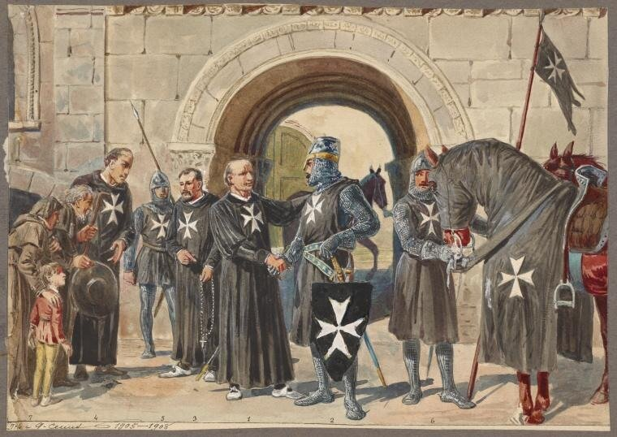
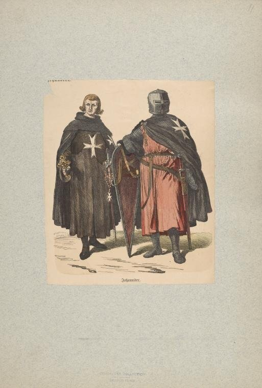

Мы уже рассматривали роль Мальтийского ордена в связи с историей формирования офицерского корпуса французских галер в эпоху Людовика XIV. Сейчас подробнее разовьем некоторые из поднятых тогда вопросов.
Духовно-рыцарский орден иоаннитов, или госпитальеров, или Мальтийский орден за свою долгую историю, насчитывающую около девяти веков, названия менял неоднократно. Основан он был крестоносцами в начале XII века.
Создание ордена самым тесным образом связано с традиционным паломничеством к святым местам в Палестине. Еще король франков Шарлемань создал для паломников приюты в Иерусалиме. Однако в ходе разборок между различными христианскими конфессиями и столкновениями их интересов с правящей в то время династией Фатимидов, в период правления халифа Хакима эти приюты, как и многие другие постройки в районе Храма Гроба Господня были разрушены. Произошло это в начале XI века и послужило одним из поводов для начала широкой пропагандистской кампании в христианских странах Европы, подготовившей крестовые походы на Восток.

Византийскому императору Константину VIII удалось договориться с сыном Хакима о восстановление разрушенных построек в обмен на строительство мечети в Константинополе. Восстановительные работы возглавили купцы из итальянского города-государства Амальфи. Однако начавшееся брожение в Европе остановить было уже нельзя, и в самом конце XI века в Палестину хлынул поток вооруженных христиан. Началась эра крестовых походов. На этой волне конгрегация монахов-бенедиктинцев, служителей иерусалимского госпиталя Иоанна Крестителя, объединилась в Орден святого Иоанна Иерусалимского. Инициатором объединения стал Жерар де Торн. В 1113 г. орден под свое покровительство взял папа Пасхалий II, эта дата считается официальным годом создания ордена. Хранящийся в Мальтийской библиотеке документ гласит: «Папа Пасхалий II жалует своему почтенному сыну Жерару, основателю и превосту Госпиталя в Иерусалиме, грамоту об учреждении Ордена Госпиталя Святого Иоанна Иерусалимского по ту и эту стороны моря, в Европе и в Азии».
После смерти в 1120 г. Жерара де Торна его место занял Раймон де Пюи, выходец из известного во Франции дворянского рода, герой штурма Иерусалима. С этого времени глава Ордена стал называться Великим магистром, странноприимный дом - госпиталем, а обслуживающие его иоанниты - госпитальерами.
Если в первые годы своего существования орден продолжал преимущественно ухаживать за больными и ранеными, то к середине XII века он взял на себя также охрану паломников, прибывавших в Иерусалим по суше через Малую Азию и Византию или по Средиземному морю. При Раймоне де Пюи был принят первый устав ордена святого Иоанна Иерусалимского, и рыцари стали участвовать в военных действиях. Символом Ордена стал белый восьмиконечный крест на красном (или черном) фоне. Четыре направления креста говорили о главных христианских добродетелях – благоразумии, справедливости, силе духа и воздержании, а восемь концов означали восемь благ, которые были обещаны Христом в Нагорной проповеди всем праведникам в раю.

Члены Ордена были разделены на 3 группы: рыцарей, капелланов (братьев-священников) и оруженосцев (служащих, которые должны были обслуживать представителей первых двух групп). Рыцарем мог стать только потомственный дворянин. Также поощрялось включение в члены Ордена сестер-послушниц. Не принимали в Орден тех людей, родители которых занимались торговлей или банковской деятельностью.

Хотя по сути своей Орден был религиозной корпорацией, он, тем не менее, отличался от других орденов, поскольку располагался не в христианской стране, а за ее пределами, находясь на территории, которую контролировали мусульманские правители. Отметим также независимость Ордена от других государств, основанную на специальную булле папы Иннокентия II от 1143 г., а также общепризнанное право иметь армию и вести военные действия. За 30-летнее управление Орденом Великим Магистром Раймоном де Пюи задачи этого братства намного переросли чисто местные масштабы деятельности
Уже в 1124 г. с помощью рыцарей-госпитальеров была снята осада арабов с главного порта Иерусалимского королевства – Яффы, и взят Тир – крупнейший торговый центр Восточного Средиземноморья. А еще через несколько лет в ордене иоаннитов было около полутысячи членов, которые успешно обороняли только в Леванте более пятидесяти крепостей.
В 1153 г. папа Анастасий IV буллой «Christianae Fidei Religio» разделил членов Ордена на рыцарей, одевавшихся в красную полумонашескую-полувоенную одежду с черным плащем-накидкой, и оруженосцев.
В 1171 г., после смерти султана Египта, власть захватил египетский визирь Юсуф Салах-ад-Дин, основатель династии Айюбидов. Курд по происхождению, Салах-ад-Дин стал во главе мусульманских сил. 3–4 июля 1187 г. объединенное мусульманское войско разгромило крестоносцев под Хиттином (у Тивериадского озера, Палестина), 2 октября 1187 г. был взят Иерусалим. К 1189 г. от власти крестоносцев была освобождена большая часть Сирии и Палестины.
В мае 1189 г. начался III Крестовый поход, который возглавили германский император Фридрих Барбаросса, французский король Филипп II и английский король Ричард Львиное Сердце. В походе участвовали и рыцари-иоанниты. Крестоносцы штурмом взяли Акру, где и расположилась главная резиденция ордена иоаннитов.
Ричард Львиное Сердце осадил Иерусалим, но взять город не смог – 2 сентября 1192 г. с Салах-ад-Дином был заключен мир, по которому Иерусалим оставался у мамлюков, а за крестоносцами сохранилась только узкая прибрежная полоса от Тира до Яффы. Столица Иерусалимского королевства была перенесена в Акру.
Иоанниты участвовали и в IV Крестовом походе, начавшемся в 1199 г. Войска под руководством итальянского маркграфа Бонифация Монфераттского и Балдуина Фландрского на венецианских судах Энрико Дандоло вместо войны с Египтом по просьбе претендента на императорский престол византийского царевича Алексея Ангела подошли к Константинополю и после осады 13 апреля 1204 г. взяли столицу Византии. Императором новой Латинской империи 9 мая был выбран граф Балдуин IX Фландрский.
Во время Пятого крестового похода 1217–1221 гг. иоанниты участвовали в неудачной осаде крепости Тавор (77 башен), а во время похода на мамлюкский Египет – принимали участие в долгой осаде и взятии крепости Дамиетта.
В 1291 г., несмотря на всю доблесть рыцарей Красного Креста (тамплиеров) и рыцарей Белого Креста (госпитальеров), сражавшихся бок о бок, Акра пала под натиском мусульманских войск, имеющих подавляющее численное превосходства. Иерусалимское королевство прекратило свое существование, как и последние владения крестоносцев на Востоке.
Иоанниты перебрались на Кипр, где у них уже были замки в Никосии, Колосси и других местах.
Отход на Кипр сопровождался ожесточенными боевыми действиями. Рыцари ордена во главе с Великим Магистром Жаном де Вилье буквально прорубили себе дорогу на галеру ордена, в то время как с палубы прикрывавшие их отход лучники обрушили грады стрел на врага, стремившегося уничтожить последних из оставшихся в живых воинов «Великой Христианской Армии».
Орден стал вассалом короля Кипра и получил от него Лимассол (Лимиссо) в качестве лена. Изгнанный из Иерусалима орден святого Самсона слился с орденом госпитальеров, и этот союз стал именоваться «рыцари Кипра».
Двадцать лет пребывания на Кипре позволили ордену восстановить силы. Казна наполнилась многочисленными поступлениями из Европы, а также добычей от морских побед над корсарами и турками. Увеличился приток новых рыцарей из Европы. Орден вновь обрел былое могущество. В то время как ордена тамплиеров и тевтонцев после утраты Святой Земли переместились в родные страны своих рыцарей и, несмотря на свое значение, в конце концов, оказались в зависимости от своих сеньоров, рыцари Ордена святого Иоанна решились на завоевание острова Родос.
Но это уже новый этап в истории ордена, тесно связанный с его морским могуществом. Поговорим об этом в следующий раз.